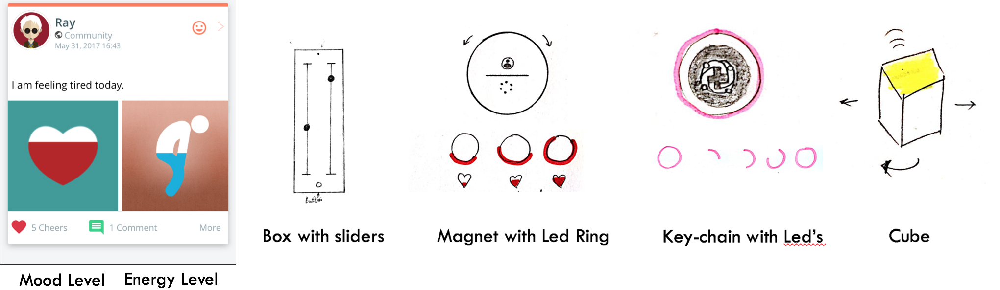
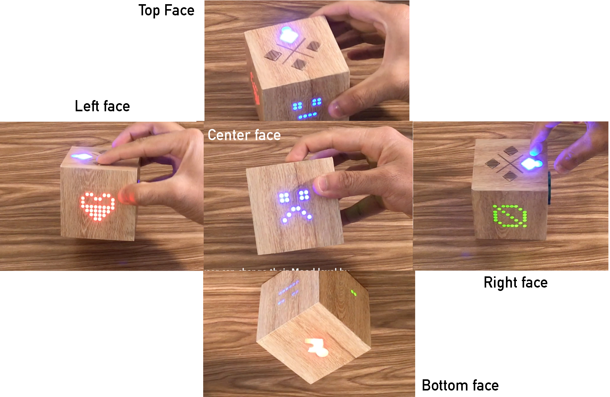

CHALLENGE
Curatio is a health startup connecting patients over distance. It connects patients and caregivers to others who know what they're going through to build empathy and share information. They have a strong user base but they lack active user engagement and are unable to attract user's attention towards their platform to encourage them to use the app more often. Our research goal was
How can we increase users’ attention, curiosity, and engagement towards Curatio platform?
PROCESS
Our design process started by thinking of ways in which data could be represented on a domestic artifact and further thinking of ways in which user could interact with their data to update their status, view their information and of others. We chose a domestic artifact to reduce the mobile usage at home and draw users' attention in a natural way as they casually interact with everyday objects in their homes.
Data Mapping
We selected the mood level and energy level as a start since these features were most popularly used and novel for this platform .as shown below in the left image Mood Level is a continuous variable in the range of 0-1 in the backend and is represented by a heart filled with red color. Similarly, the energy level has 8 states from very tired to super excited in the range of 0-1.

This was an iterative process where I sketched out several design ideas (upper left) to improve the theme and usability of the design. We sketched out various designs based on the nature of everyday devices and artifacts used in the home such as Box, Fridge Magnet, Key Chain and a Cube.
Finally, we as a team decided to proceed with cube since we could potentially represent more information by utilizing all the 6 faces and the number of ways we can interact with a cube as compared to other artifacts.
Design Rationale
There were certain characteristics taken into consideration for each component of our prototype.
- Left Face: Mood Level: The left face represented the Mood level in the form a heart shape. We used an 8x8 LED display to represent this shape and depict the current mood level for the user. Further, a user could change their mood level by holding onto the face and tilting it to adjust to various levels.
- Center Face: Energy Level: Similar to the mood level the user could see their current energy state and further change it by tilting the cube.
- Right Face: Cheers: This face represented the cumulative number of cheers (likes) received on the user's mood and energy level.
- Top and Botton Face: User Mode: The cube could represent information for the user and also represent the information of other users. When the top face is in the upright position the cube represents the data for the user and when its flipped it shows the data for the best friend of the user (could be modified within the app). In the friend mode, the user could shake the cube to send cheers to their friend's mood and energy level.
- Ambient Light and Sound: The Cube also makes ambient noise and light effects when there is new information or someone interacts with the cube to draw users attention.
OUTCOME

We created Curatio Cube a high fidelity prototype to motivate and propose a new kind of interface that could enable users to explore the app data by embedding it into everyday household objects. Our design provides users with ways to explore their own data and that of their care ones by interacting with the cube. Curatio Cube is one of many possible ways of embedding data into everyday objects.
We anticipate Curatio Cube may generate moments of
anticipation, curiosity, and everyday exploration among app user. This work opens the opportunity for exploring and embedding data in a domestic setting and understanding ways that are meaningful, creative, and aesthetically suitable for a home.
Next Steps
We envision with an extensive study in a home-setting over an extended period of time that Curatio Cube could provide us with results as to how users used the cube in their daily lives to engage with the app data.